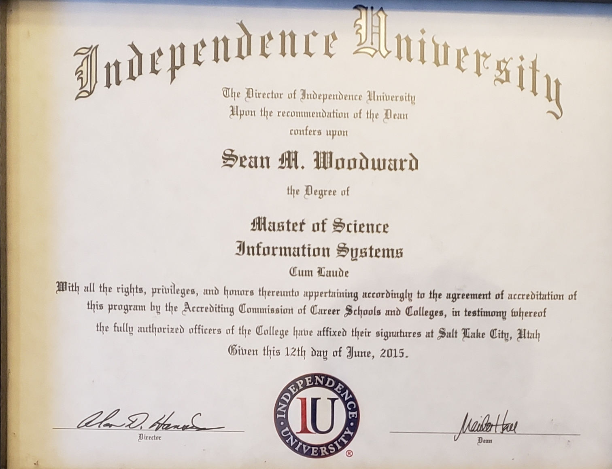
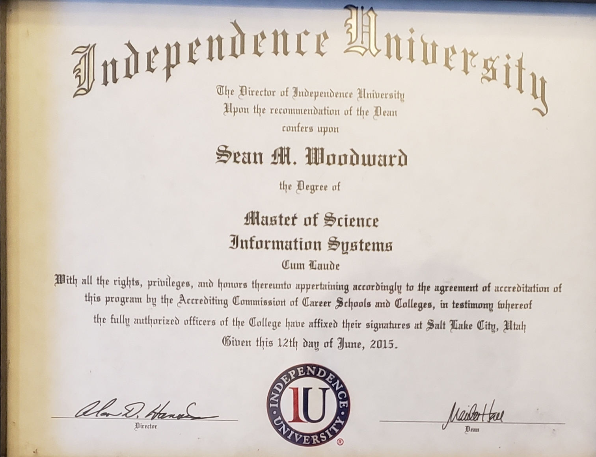

Master Degree
By Sean Woodward on 4/22/2021 in Achievements / Awards
I obtained my Master of Science in Computer Information Systems from Independence University on 06/12/2015

By Sean Woodward on 4/22/2021 in Achievements / Awards
I obtained my Master of Science in Computer Information Systems from Independence University on 06/12/2015
